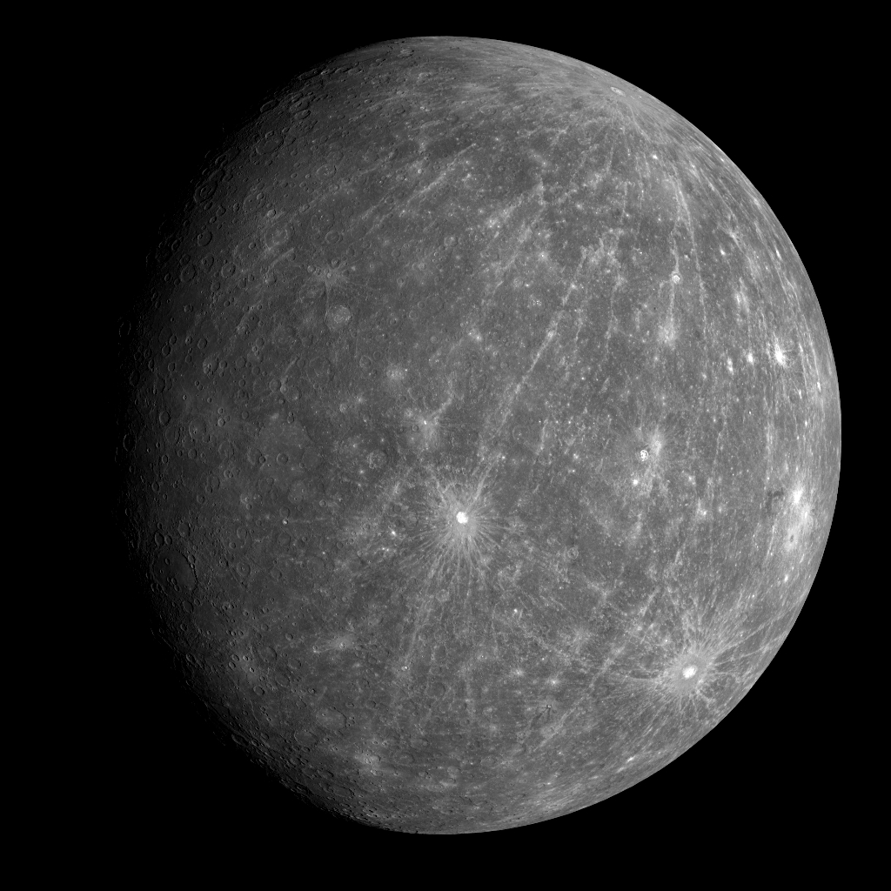
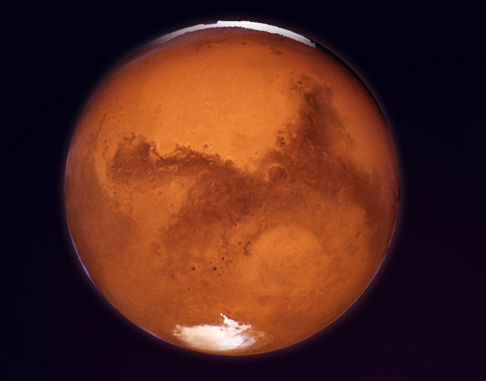
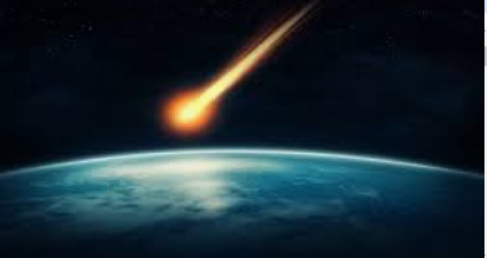
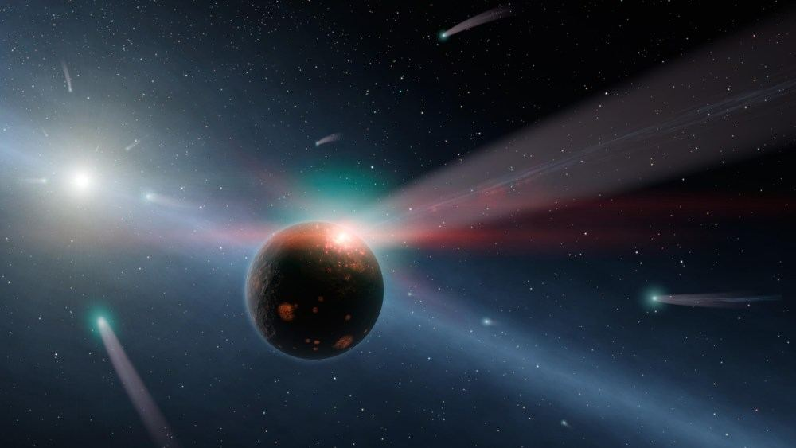

SAULES SISTEMOS KUNAI
SAULES SISTEMOS KUNAI
Kosmosas gali reikšti: Visata – fizikinis/astronominis terminas, reiškiantis visą materialųjį pasaulį, (objektyviąją) realybę – medžiagos ir laukų visumą, egzistuojančią erdvėlaikyje; Kosmosas (filosofija) – filosofinė kategorija, reiškianti pasaulį, tvarką (kaip priešpriešą chaosui).
PLANETOS
MERKURIJUS

Merkurijus (sen. lietuvių pavadinimai Vaivora, Pažarinis[1]) – artimiausia Saulei planeta, už kurios kita, toliau nuo Saulės esanti planeta, yra Venera.
Merkurijus aplink Saulę skrieja ištęsta elipsine orbita (nuotolis nuo Saulės kinta nuo 46 iki 70 milijonų km), dėl to Saulės apšviestas paviršius įkaista iki 700 K (430 °C) perihelyje ir iki 560 K (290 °C) afelyje. Kadangi beveik neturi atmosferos, kuri išlaikytų šilumą, bei dėl ilgai trukančios Merkurijaus nakties temperatūra nukrinta iki 100 K (-163 °C) ties pusiauju.
VENERA

Venera (sen. lietuvių pavadinimai: Aušrinė, Vakarinė) – antroji pagal atstumą nuo Saulės planeta (tarp Merkurijaus ir Žemės).[1] Po Mėnulio tai – antrasis pagal šviesumą objektas naktiniame danguje (iki –4,6 ryškio), maksimumą pasiekiantis tuoj pat po saulėlydžio arba prieš pat saulėtekį Venera – vidinė Saulės sistemos planeta ir, žiūrint iš Žemės, nuo Saulės niekad nenutolsta toliau nei 47,8°. Ši planeta, turinti kietą dangą, kartais dar vadinama Žemės seserimi dėl dydžio ir sudėties panašumo.
ZEME

Žemė (🜨; Žemės rutulys, Pasaulis) – Saulės sistemos planeta. Pagal atstumą Žemė yra trečia nuo Saulės (tarp Veneros ir Marso) ir penkta pagal masę. Žemės amžius yra apie 4,57 mlrd. metų. Žemė yra vienintelė planeta Saulės sistemoje, turinti tokio sąlyginio dydžio palydovą − Mėnulį. Tai vienintelė žinoma planeta, kurioje egzistuoja gyvybė.
MARSAS

Marsas – ketvirtoji pagal atstumą nuo Saulės (tarp Žemės ir Jupiterio) ir antroji mažiausia Saulės sistemos planeta po Merkurijaus.
Iš Žemės neretai matomas plika akimi kaip ryški rausvos spalvos žvaigždė. Vidutinis absoliutinis ryškis – +0,71, tačiau menamas ryškis gali siekti −2,94, ryškumu nusileidžiąs tik Venerai, Mėnuliui ir Saulei.
JUPITERIS

Jupiteris (sen. lietuvių pavadinimas Indraja) – penktoji pagal nuotolį nuo Saulės sistemos planeta (tarp Marso ir Saturno), dujinė milžinė. Turi žiedų sistemą.
Kaip ir kitos planetos, Jupiteris aplink Saulę skrieja ištęsta elipsine orbita, kurios viename židinyje yra Saulė. Nuotolis tarp Saulės ir Jupiterio kinta nuo 740 mln. iki 816 mln. km, Saulę apskrieja per 11,86 Žemės metų.
SATURNAS
_large.jpg)
Saturnas – antra pagal dydį (po Jupiterio) ir šešta pagal atstumą nuo Saulės planeta (tarp Jupiterio ir Urano).[2] Saturnas yra dujinė planeta milžinė, jos vidutinis skersmuo yra devynis kartus didesnis už Žemės.[3][4] Spėjama, kad Saturno vidų sudaro iš geležies ir nikelio bei silikatų uolienų sudarytas branduolys, apsuptas storu metalinio vandenilio sluoksniu, kurį savo ruožtu supa skysto helio sluoksnis. Planeta pavadinta romėnų turto ir žemdirbystės dievo vardu; ženklas (♄) vaizduoja pjautuvą.
URANAS

Uranas – septinta pagal nuotolį nuo Saulės planeta ir pirmoji Saulės sistemos planeta, atrasta teleskopu.[1] 1781 m. kovo 13 d. planetą atrado anglas Viljamas Heršelis. Planeta pavadinta seniausiojo graikų dievo Urano vardu. Uranas – planeta milžinė – jos skersmenyje būtų galima išrikiuoti 4 Žemės dydžio planetas, o iš planetos masės padaryti 14 Žemės dydžio planetų. Uranas skrieja 6,8 km/s greičiu ir Saulę apskrieja per 84 mūsų metus. Orbita labai ištęsta – perihelyje Uranas būna 270 mln. km arčiau Saulės negu afelyje.
NEPTUNAS

Neptūnas – Saulės sistemos išorinė planeta, aštunta pagal nuotolį nuo Saulės. Aplink Saulę skrieja elipsine orbita vidutiniu 5,4 km/s greičiu. Plika akimi yra nematomas, kadangi opozicijoje jo ryškis siekia tik 7,6 ryškio. Pro teleskopą opozicijos metu Neptūno skritulys matomas 2,5" kampu. Neptūno atmosfera susideda iš vandenilio, helio, metano, amoniako.
Mazieji kunai
Meteoroidas – aplink Saulę ar kitą žvaigždę skriejantis mažų matmenų (nuo kelių mikrometrų iki kelių dešimčių metrų) kietasis kūnas.
.jpg)
Meteoroidas-tai meteoroidas kirtęs Žemės atmosferą ir nukritęs ant jos paviršiaus.

Kometa – mažas kosminis kūnas (kometoidas), skriejantis aplink Saulę ir bent kartais parodantis komą (kometos skraistę) arba uodegą dėl Saulės poveikio kometos branduoliui, kuris yra mažas kūnas sudarytas iš uolienos, dulkių ir ledo.

Kometa – mažas kosminis kūnas (kometoidas), skriejantis aplink Saulę ir bent kartais parodantis komą (kometos skraistę) arba uodegą dėl Saulės poveikio kometos branduoliui, kuris yra mažas kūnas sudarytas iš uolienos, dulkių ir ledo.